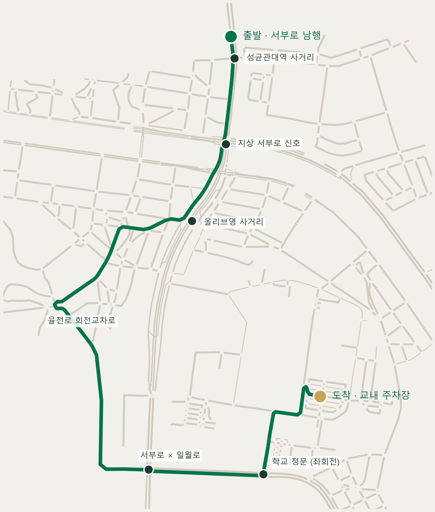
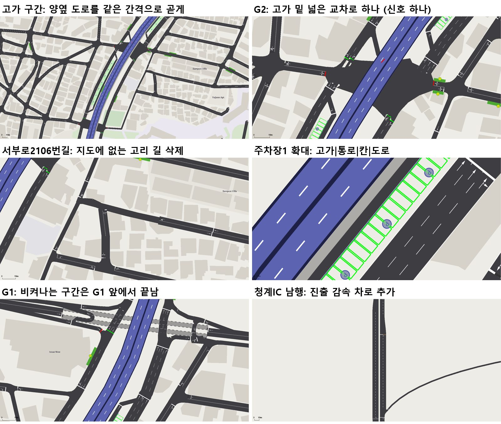

성균관대역 사거리부터 율전로 회전교차로, 학교 정문까지 2.8 km를 SUMO로 옮기고, 버스·골목 차량·주차 차량이 오가는 교통 속에서 PPO로 학습한 AV가 신호를 지키며 목적지까지 달립니다.
짧은 2.8 km 안에 한국 도심에서 운전자가 내리는 판단이 거의 다 들어 있습니다. 신호 교차로, 회전교차로, 신호 없는 좌회전, 고가 옆 지상 도로, 버스 정류장 구간이 한 경로에 이어집니다.

성균관대역 사거리, 지상 서부로, 올리브영 사거리, 서부로×일월로, 학교 정문 좌회전. 빨간불 앞에서 정지선에 맞춰 서야 합니다.
서부로 고가가 갈라지는 구간에서 지상 1차로로 내려가고, 정류장에 선 버스 뒤에서 기다리거나 지나갑니다.
우선순위가 없는 골목 교차로를 지나고, 회전교차로에서는 안에 있는 차에 양보한 뒤 들어갑니다.
마주 오는 차를 보고 틈이 날 때만 좌회전합니다. 이 프로젝트에서 가장 어려운 지점입니다.
OpenStreetMap을 바탕으로, 카카오맵 길찾기·위성사진·로드뷰로 확인한 값을 덧입혔습니다.

배경 교통을 600초 먼저 흘려 길에 차가 차 있는 상태에서 AV를 투입합니다. 일반 차량(HV)은 SUMO 운전 모델로 움직이고, AV의 판단에 직접 영향을 줍니다.
수업 PPO 코드를 그대로 쓰고, 성대역 도로에 맞게 관측과 보상을 늘렸습니다. 규칙 기반 보조나 차선 지시는 쓰지 않습니다. 길찾기 수준의 경로 정보만 줍니다.
수업 기본 관측 31차원(내 속도·차로·주변 차량) + 다음 신호(거리, 빨강·노랑, 남은 시간) + 다음 교차로(거리, 양보 여부, 우선 차량 접근) + 제한 속도 + 앞차·정지선까지 가까움과 필요한 감속
가감속 1개(연속값)와 차선 변경 1개(왼쪽·유지·오른쪽). 속도 제어는 SUMO 안전장치 없이(speedMode 0) AV가 직접 합니다.
목표 속도 주행 보상, 충돌 −5, 빨간불 진입 −30, 과속 감점, 앞차·정지선과의 목표 간격(너무 가깝거나 너무 멀면 감점), 양보 위반·꼬리물기 감점
PPO(hybrid 정책: 가감속은 정규분포, 차선은 범주형), 학습률 1e-4, n_steps 2048. 학습 시드 500개에서 출발점·교통을 섞어 학습하고, 평가는 처음 보는 시드로만 합니다.
학습에 쓰지 않은 시드 2000–2999에서 한 번씩, 모두 1,000번 출발부터 교내 주차장까지 달린 결과입니다.
| 지표 | 최종 모델 |
|---|---|
| 완주 | 975/1000 (97.50%) |
| 충돌 | 25/1000 (2.50%) |
| 충돌률 95% 구간 | 1.70–3.66% |
| 시간초과 | 0/1000 |
| 빨간불 위반 에피소드 | 0/1000 |
| 신호 정차 표본 | 1,677회 |
| 정지선까지 거리 중앙값 | 2.43 m |
| 정지한 앞차와의 간격 중앙값 | 9.79 m (51회) |
| 정지한 앞차와 5 m 이내 | 0/51회 |
| 급제동 횟수 (≤ −3 m/s²) | 6,407회 |
| 급제동 횟수 / 100 km | 233.39회 |
| 완주 시간 중앙값 | 497초 |
충돌 25건 중 15건은 신호 없는 좌회전 지점(:495951808)에서 일어났습니다. 마주 오는 차와의 틈 판단이 남은 과제입니다.
최종 모델로 무작위 시드 10,200개를 한 번씩 주행하며 0.5초마다 기록합니다 (수집 중).
학습·평가 시드와 겹치지 않게 뽑았고, 수업 collect_pomdp_data.py 형식을 그대로 따릅니다.
| 칼럼 | 내용 |
|---|---|
episode, t | 에피소드 번호, 에피소드 안 스텝 |
observation | AV가 받은 부분 관측 (45차원) |
action_raw, action.* | 정책 출력 [가감속, 차선], 실제 적용된 차선 변경 |
reward | 그 스텝의 보상 |
terminated, truncated | 충돌·도착 종료 / 시간 제한 종료 |
state | SUMO 내부 상태 (위치·속도·차로 등, 관측에는 쓰지 않음) |
detected_vehicles | 관측 시점에 감지된 주변 차량 |
event.* | 충돌, 도착, 차로 변경 전후 |
next_observation, next_state | 다음 관측·상태 (에피소드 끝에만 직접 기록) |
10,200 에피소드 × 약 1,000 스텝 ≈ 1,000만 transition. 20 에피소드씩 .jsonl.gz(전체)와 .npz(학습용)로 저장
평가와 같은 전체 경로·기본 교통, 결정적 정책(평균 행동), 배경 교통 600초 뒤 투입
Hugging Face 링크 준비 중
모든 수치는 학습에 쓰지 않은 시드로 잰 값입니다.
담당 작성 필요
담당 작성 필요
담당 작성 필요
담당 작성 필요